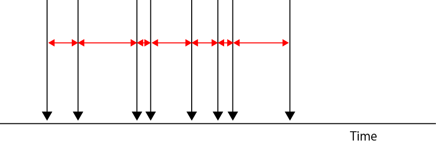
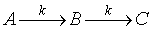
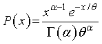

ガンマ分布はどのような生命科学的モデルなのか-02？
未だ，私の中ではっきりはしていませんが，諸先生方と議論をしていただき，現時点で結論付いたことは，
ガンマ分布では二つのモデルを区別することはできない
と言う結論です．
つまり，ガンマ分布は，
事象（入力）の発生間隔が指数分布に従っているもの
を定義としていることのようです．
ですので，
各事象は逐次的に起こる
場合には，

ランダムに発生する入力事象の間隔は，指数分布にしたいがいますし，
各事象は逐次的に起こる
場合にも，

ただ，ガンマ分布の重要なポイントして，
各入力事象に個性はない
と言うことなので，上記の逐次反応のように，
k1 ≠ k2
の場合には，A→B，が起こってから後，B→Cが起こる，というように明らかに順番が決まっていますので，厳密にはこれはガンマ分布とはいえません．なので，

のように，各反応速度が同一であれば，これはガンマ分布といえそうです．
しかし，実際の生化学的な逐次反応においては，一つの反応が他の反応に比べて極端に遅い，律速段階，なるものが往々にしてあるので，厳密な意味において，ガンマ分布に従うものは少ないのでは？と思います．
2003年の論文，
Kimura, Y., Toyoshima, N., Hirakawa, N., Okamoto, K. & Ishijima, A. (2003). A kinetic mechanism for the fast movement of Chara myosin. Journal of Molecular Biology 328, 939-950.
において，1分子の相互作用の発生時の時間の分布があたかもガンマ分布のようにピークを持ったのは，
ADPの解離，新しいATPの結合
の各自定数が，ATP 1uM，の条件でほぼ等しかったので，そうなったといえそうです．
と言うことで，結論からいうと，
実験結果がガンマ分布に従ったからといってすぐに唯一のモデルを提唱できるわけではない
と言うことですね．
ガンマ分布はとても使いやすい（ピークを持つ分布ならある程度フィットできる，条件を変えてピークがないような分布になっても何となく説明が付きやすい）モデルですので，使い方は注意した方がいいかもしません．
おまけ：
しかし，先の説明では，

と記述していましたね？
これは，先に導いたガンマ分布の式，

とは全然違いますね？
しかも，先の説明において，α＝β，とおくと計算ができません．
なぜでしょう？これも．．．諸先生方に教わりましたので，ここをご覧ください．